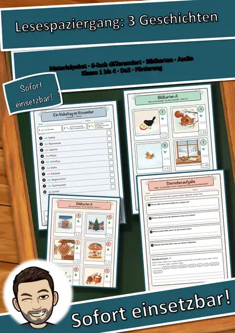
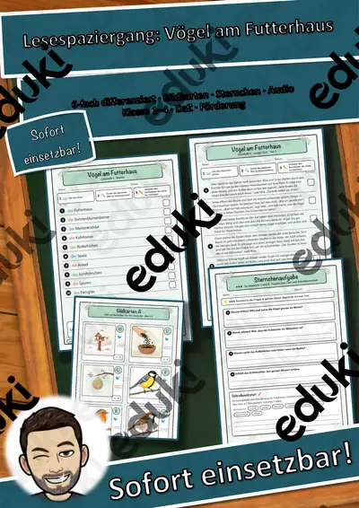
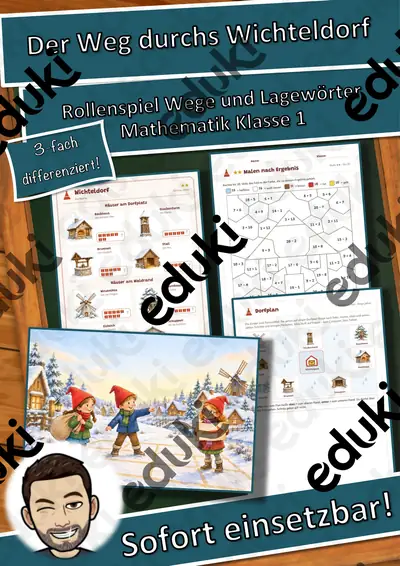
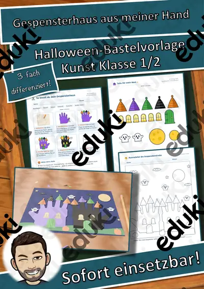

Materialpaket Lesespurgeschichten Sport Klasse 1: 9 Lesespuren mit Rätselaufgaben, dreifach differenziert

Materialpaket Lesespurgeschichten Musik Klasse 1: 9 Lesespuren mit Rätselaufgaben, dreifach differenziert

Materialpaket Lesespurgeschichten Kunst Klasse 1: 7 Lesespuren mit Rätselaufgaben, dreifach differenziert

Materialpaket Lesespurgeschichten Informatik Klasse 1: 6 Lesespuren mit Rätselaufgaben, dreifach differenziert

Materialpaket Lesespurgeschichten Ethik Klasse 1: 5 Lesespuren mit Rätselaufgaben, dreifach differenziert

Lesespaziergang Materialpaket: 3 Geschichten, 6-fach differenziert – Herbst, Advent, Winter (Klasse 1–4, DaZ)

Lesespaziergang Vögel am Futterhaus – 6-fach differenziert mit Bildkarten, Sternchenaufgaben und Audio (Klasse 1–4)

Lesespaziergang Auf dem Weihnachtsmarkt – 6-fach differenziert mit Bildkarten, Sternchenaufgaben und Audio (Klasse 1–4)

Lesespaziergang Ein Nebeltag im November – 6-fach differenziert mit Bildkarten, Sternchenaufgaben und Audio (Klasse 1–4)

Lesespaziergang Nikolausabend: Stiefel, Sterne, Plätzchenduft – 8 Stationen in 3 Lesestufen mit Hörfassung (Klasse 1–2, DaZ)

Lesespaziergang Tiere im Winter: Pit, der Igel, sucht ein Bett – 8 Stationen in 3 Lesestufen mit Hörfassung (Klasse 1–2, DaZ)

Lesespaziergang Laternenzeit: Linas Laterne – 8 Stationen in 3 Lesestufen mit Hörfassung (Klasse 1–2, DaZ)

Ostereiersuche im Garten – Rollenspiel Lagewörter und Zählen bis 20, 3-fach differenziert (Klasse 1)

Lesespaziergang DaZ: Wir backen – Wortschatz mit Rätseln, 3-fach differenziert (Klasse 1–4)

Lesespaziergang DaZ: Spielen im Schnee – Wortschatz mit Rätseln, 3-fach differenziert (Klasse 1–4)

Lesespaziergang DaZ: Gemüse – Wortschatz mit Rätseln, 3-fach differenziert (Klasse 1–4)

Lesespaziergang DaZ: Sankt Martin – Wortschatz mit Rätseln, 3-fach differenziert (Klasse 1–4)

Materialpaket Rechenwelten im Winter für die 1. Klasse: 5 Mathe-Rollenspiele, 3-fach differenziert (Adventsmarkt, Plätzchenbäckerei, Wildpark & mehr)

Der Spielzeugladen vor Weihnachten – Rollenspiel Münzen und Scheine bis 20 €, 3-fach differenziert (Klasse 1)

Der Weg durchs Wichteldorf – Rollenspiel Wege, Lagewörter und Schritte zählen, 3-fach differenziert (Klasse 1)

Igel im Laubnest – Klappnest basteln mit Sachtext Winterschlaf, 3-fach differenziert (Tiere im Herbst, Klasse 1/2)

Der Kürbis von innen – Klapp-Kürbis basteln und beschriften, 3-fach differenziert (Halloween/Herbst, Klasse 1/2)

Halloween-Ziehkarten – Präpositionen sichtbar machen: über, vor, neben, auf, 3-fach differenziert (Klasse 1/2, DaZ)

Halloween-Hüpffiguren – 6 Bastelvorlagen mit Federkugel, Steckbrief und Geschichte, 3-fach differenziert (Klasse 1/2)

Halloween-Handpuppen – Bastelvorlage mit Sachtext und Puppentheater, 3-fach differenziert (Klasse 1/2)

Fingerpuppen Wintertiere – Bastelvorlage mit Sachtext und Sprechaufgaben, 3-fach differenziert (Klasse 1/2)

Wimpelkette Winter – Bastelvorlage mit Wintermotiven, Buchstaben WINTER und eigenen Wimpeln, 3-fach differenziert (Klasse 1–4)

Advents-Häuserstadt – Klassen-Adventskalender zum Basteln mit 24 Adventsaufgaben, 3-fach differenziert (Klasse 1–4)

Fensterlaterne Sankt Martin – Laterne basteln mit Lesetext zur Legende, 3-fach differenziert (Klasse 1–3)

Gespensterhaus aus meiner Hand – Halloween-Bastelvorlage mit Lesen und Schreiben, 3-fach differenziert (Klasse 1/2)
Keine Materialien gefunden – versuch einen anderen Suchbegriff oder Filter.
Was Erstklässler brauchen
Im ersten Schuljahr zählt jede Minute: Kinder lernen Buchstaben, Zahlen und Schulregeln gleichzeitig. Die Materialien dieser Seite sind deshalb knapp im Text, klar im Layout und reich an Bildern. Sie stützen das, was im Unterricht ohnehin passiert, ohne ihn zu überfrachten.
Lesen im Rundlauf
Die Lesespaziergänge sind das Herzstück für den Deutschunterricht. Titel wie „Lesespaziergang Nikolausabend“, „Lesespaziergang Laternenzeit: Linas Laterne“ und „Lesespaziergang Tiere im Winter: Pit, der Igel, sucht ein Bett“ legen kurze Sätze und Bildkarten im Klassenraum aus. Die Kinder gehen von Karte zu Karte und tragen Lösungen ein, sodass Lesen und Bewegen zusammenfallen. Für Kinder mit Deutsch als Zweitsprache gibt es die Reihe „Lesespaziergang DaZ“.
Rechnen in Rollen
Mathematik wird für Anfänger zum Spiel, wenn sie etwas kaufen, verkaufen oder suchen dürfen: „Der Spielzeugladen vor Weihnachten“, „Der Weg durchs Wichteldorf“ und „Ostereiersuche im Garten“. Das „Materialpaket Rechenwelten im Winter für die 1. Klasse“ fasst fünf Rollen zusammen.
Basteln, Bewegen, Hören
Für die Feinmotorik gibt es „Igel im Laubnest“, „Der Kürbis von innen“, „Halloween-Handpuppen“ und „Fingerpuppen Wintertiere“. Die Bewegungsangebote „Mein Sporttag“, „Fang- und Laufspiele“ und „Bewegungslandschaft“ lassen sich in Halle oder Pausenhof einsetzen. Musik kommt mit „Ohren auf!“ und „Instrumente selbst bauen“ dazu, Computerdenken ohne Gerät mit „Geheime Zeichen“ und „Sortieren wie ein Computer“.
So setzt du es im Anfangsunterricht ein
Die Blätter sind für kurze Einheiten gedacht. Ein Lesespaziergang füllt eine Stunde, ein Bastelblatt eine halbe, und die Bewegungsideen passen in jede Lücke dazwischen. Weil Erstklässler unterschiedlich weit sind, tragen Bilder und Symbole die Aufgaben, und Vorlesen ist jederzeit möglich. Über den Klassenfilter kannst du die Auswahl nach Fach eingrenzen, die Suche findet auch einzelne Titel.
Häufige Fragen
Müssen Erstklässler schon fließend lesen?
Nein. Die Texte sind kurz, die Bilder tragen das Verständnis, und Vorlesen ist jederzeit möglich.
Gibt es Material für den Schulanfang?
Ja, unter anderem „Erster Schultag“ und Klassenregeln-Plakate. Du findest sie über die Suche.
Kann ich Material in unterschiedlichen Stufen einsetzen?
Viele Lesespaziergänge und Rechenwelten sind differenziert, sodass die ganze Klasse dieselbe Geschichte bearbeitet.
Welche Fächer sind in Klasse 1 am stärksten vertreten?
Deutsch, gefolgt von Mathematik und Kunst. Sachunterricht und Sport sind ebenfalls vertreten.